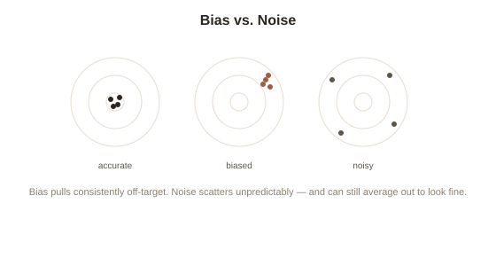

Chapter 2: Bias vs. Noise
Chapter 1 ended with a hook worth taking seriously: radiologists shown the identical X-ray weeks apart sometimes reach different diagnoses, not because the image changed, but because their own judgment isn't as consistent as they assume. That's a genuinely different problem from anchoring or availability — and Kahneman spent much of his later career, culminating in a 2021 book with Olivier Sibony and Cass Sunstein, arguing psychology had been underrating it for decades.
Two separate ways judgment goes wrong
Kahneman's framing splits judgment error into two categories that are easy to conflate but behave completely differently. Bias is a systematic, predictable error — everyone's estimates get pulled in the same direction, which is exactly what made anchoring and availability (Chapter 1) identifiable in the first place: average the errors across many people, and the average is still off, consistently, in one direction. Noise is different: it's random, unpredictable scatter, with no consistent direction at all — one radiologist reads a scan as concerning, another reads the identical scan as fine, and the same radiologist might even disagree with their own earlier read given the same image later. Average a noisy set of judgments together and the average often looks fine, which is precisely what makes noise so easy to miss — it's invisible in aggregate statistics and only shows up when you compare individual judgments made on the identical case.

Where noise turns out to be enormous
Kahneman's research collaborations with real organizations found noise levels that surprised even experienced professionals about their own fields. Underwriters at the same insurance company, pricing the identical policy, routinely differed by 55% or more from each other — not a small rounding difference, a genuinely different number entirely. Federal judges sentencing similar cases, under supposedly the same guidelines, have shown wide sentencing disparities tied to factors as arbitrary as which judge happened to be assigned, or even the time of day a decision was made. This last pattern has a specific name: occasion noise (variation in the same person's judgment depending on irrelevant circumstances of the moment — mood, fatigue, even whether a parole board has recently eaten), distinct from pattern noise (different people or the same person consistently weighing factors differently across cases, not just randomly) and level noise (some judges being systematically harsher or more lenient overall than others, a stable difference in baseline rather than random scatter). All three add up, and none of them show up in a simple average.
Why fixing bias doesn't fix noise, and vice versa
The two problems require genuinely different remedies, which is part of why treating them as one blurry category of "error" leads to weak fixes. Reducing bias generally means correcting a known, specific, directional pull — Chapter 1's advice to deliberately slow down and hand a decision to System 2 targets bias fairly directly, since it interrupts the specific mental shortcut causing the skew. Reducing noise requires something closer to standardizing the judgment process itself, since there's no single direction to correct — structured checklists, clearly defined criteria applied the same way every time, and combining multiple independent judgments (a documented, general phenomenon called the wisdom of crowds, where averaging many independent, noisy estimates cancels out much of the randomness even when no individual estimate was reliable) all reduce noise without needing to know which direction any one judgment was wrong in.
Why this matters more than it sounds
Kahneman's own summary of the research is genuinely counterintuitive: in many real organizational contexts he studied, noise contributed as much or more error to judgment than all the well-known, decades-studied biases combined — yet almost all popular writing about decision-making (including much of Chapter 1's own territory) focuses overwhelmingly on bias, because bias is easier to demonstrate in a clean lab experiment and easier to name. Noise is harder to see specifically because it requires comparing many separate judgments on the identical case, which most real-world settings never actually do — an insurance company rarely has two underwriters price the same file and compare notes, so the disagreement stays invisible by default, not because it isn't there.
Try this
Ideas for noticing or testing this in your own life.
- Run a small noise audit of your own: ask two people who don't know each other's answer to independently judge the same thing (rate a job candidate, estimate a project's timeline) and compare — the gap is your noise level on that judgment.
- Notice occasion noise in yourself: track whether your own patience, generosity, or leniency toward the same kind of situation shifts noticeably based on time of day, hunger, or mood — then ask whether that's actually relevant to the decision.
Worth pulling on?
A few loose threads from this chapter — if any of these genuinely grab you, that's a good sign of where to go next.
- One specific, well-documented bias deserves its own closer look: the asymmetry between how strongly people react to losing something versus gaining the equivalent thing. → The subject of the next chapter: loss aversion and prospect theory.
- Structured decision processes are one of the most effective known fixes for both bias and noise together. → Covered in the final chapter of this topic: what actually works to reduce judgment error.